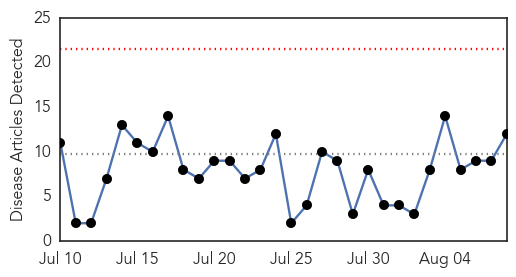
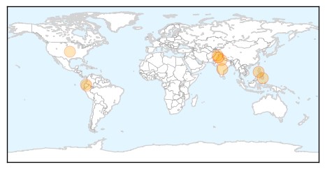
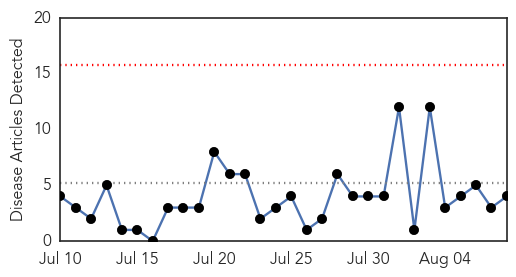
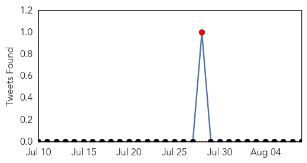
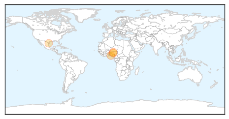
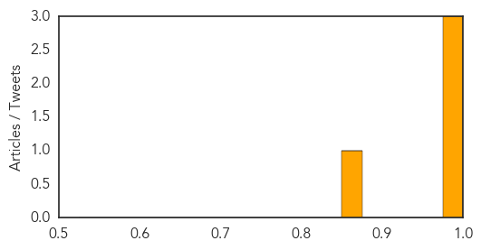

Dengue Fever
30-Day Web Trend
0 alerts, 0 warnings

30-Day Twitter Trend
0 alerts, 0 warnings

Article Locations
Article Confidences

Top Articles:
- 0.993
- Dengue on Rise in Telangana
- 0.975
- Philippines: Speaker Feliciano Belmonte hospitalized with dengue fever
- 0.957
- Dengue cases on the rise as 6 test positive in Noida, Ghaziabad
- 0.930
- 16 dengue cases confirmed till Friday in Gurgaon
- 0.900
- Dengue cases in Pampanga rise by 80%
- 0.811
- Forging a new model - Letters
- 0.807
- Dengue to be expelled from schools, colleges
- 0.769
- ‘No dengue case in Pindi’
- 0.748
- Upstate Medical University Is Awarded Federal Grant to Help Catch Disease-Carrying Mosquitoes
- 0.564
- Dengue control measures: Cleanliness drive in colleges, schools ordered
- 0.558
- Print this news article
- 0.544
- Syracuse researchers receive military grant to eliminate dengue, chikungunya vector
Top Tweets:
- 0.634
- Flavivirus news: Four dengue cases reported - The Hindu: Four dengue cases reportedThe HinduFou... http://t.co/o3W3pDgU1B pathogenposse
Meningitis
30-Day Web Trend
0 alerts, 0 warnings

30-Day Twitter Trend
1 alerts, 0 warnings

Article Locations
Article Confidences
Top Articles:
Top Tweets:
-
No tweets found for Aug 08, 2015